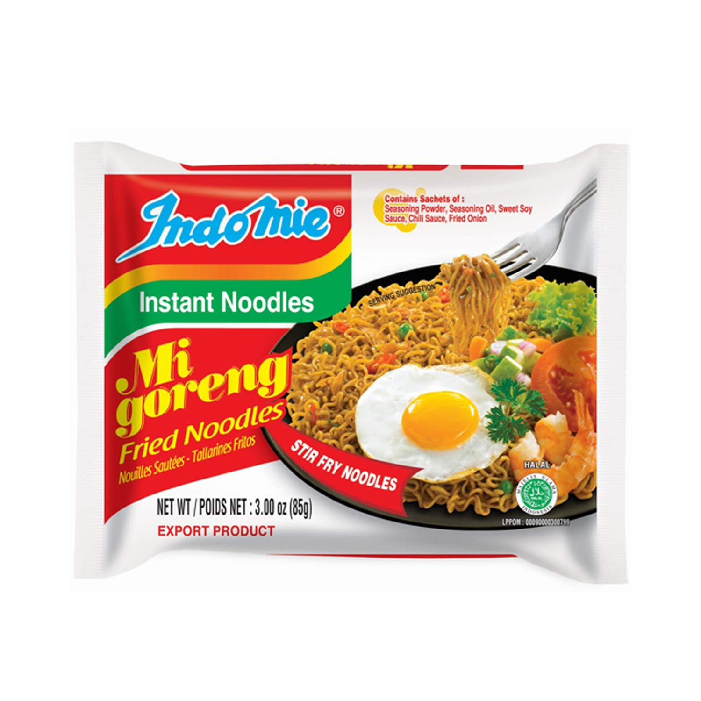

Indomie Noodles

Description
I've usually bought maggi or yippee and still do (mainly cause it's easily available
and costs only about half as much as indomie), but indomie ships with very different flavours
and a liquid too that adds a special taste to noodles that neither yippe or maggi can provide
(atleast not with any of the flavours they're shipping rn)
Ingredients
- indomie noodles - 1 or more
- water - as required
Steps
- First and the only step
follow the instruction on the back of the packet.
If you're reading this, you don't trust the noodle maker enough to follow
their recipe, so here's how you do it.
- boil water, I usually take half a cup and add more as needed
- once the water is boiling, add the noodles to it, stir well. Add more water if required
- once it looks like it's cooked through, add the flavours
(don't add the liquid/soy sauce? yet, that comes after this)
- after stirring for a minute or two, pour the noodles into a bowl and add the liquid to it and stir well
<= Home